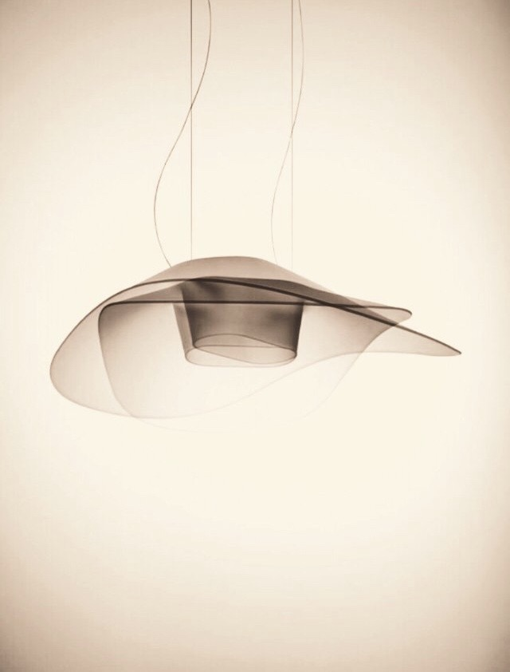

Paintings and Street Arts
 [Untitled: 2017-06-01]
We, often times, do not look at what's in the sky. In fact, not many people pause their life to see what's above them. Maybe life is too tough that we do not have any room to think about what's beyond. We visit instagram, facebook, LinkedIn, etc. for every minute. But, we are not used to agonize ourselves, losing many opportunities to ponder what they're truly attached to. This piece, I tried to depict me, my friends, and my acquaintances who are not used to muse on things above our life.